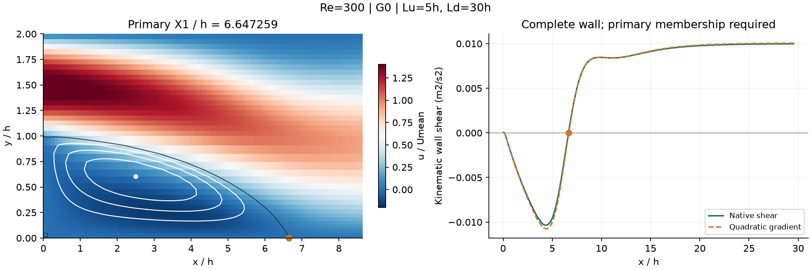
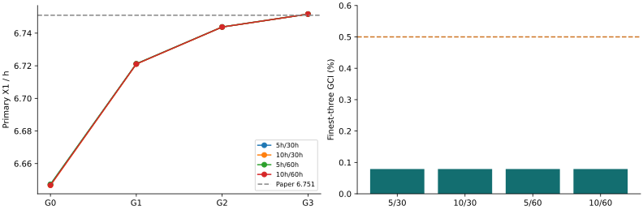

COMACBENCH / CFD / Re=300
研究通过
四档网格 × 四种域，共 16 组：1 组复用已保存原生场，15 组新求解。先确认主回流区，再评价再附着长度、入口流量和数值敏感性。
16/16已结束算例
16/16原生及身份有效
±2%研究候选容差
10%公开评分容差保持
新身份 Re=300 v3；启动前须完成 18 组/36 场分支复核。两次场保存策略：配对已通过。G0–G2 全部有效后才放行 G3，完成全矩阵后再决定容差。
查看主涡与全部壁面零点

白线为主涡内部闭合流线，黑线为零流函数；橙点归属主涡，其他候选全部保留。
本阶段决策
本组数值门槛全部通过。候选容差仅适用于本研究，未扩展 Re=400。
完整分析 · CSV · 复核与适用边界

本次验证的范围
二维稳态层流，h=0.01 m，扩张比 2。域为上游 5/10h、下游 30/60h；参考论文 Table 5 给出 Re=300 的 X1/h=6.751，仅在识别主涡后用于误差比较。最细网格 GCI≤0.5%、近壁差≤0.1%、域差≤0.25%；粗网格近壁差仅作趋势诊断。
二次近壁梯度采用连续负剪切分支的双向唯一重叠对应，允许零点跨采样区间；分裂、合并、零平台或无对应均拒绝。原生主涡识别与参考值保持冻结。新算例保留最近两次完整场、冻结初值及全部求解日志，旧证据不清理。该层流研究不能代替三维非定常航空工业工况验收。
冻结协议与身份 · 父阶段验证 · 36 场复核记录 · Re=200 主涡复核 · 参考论文